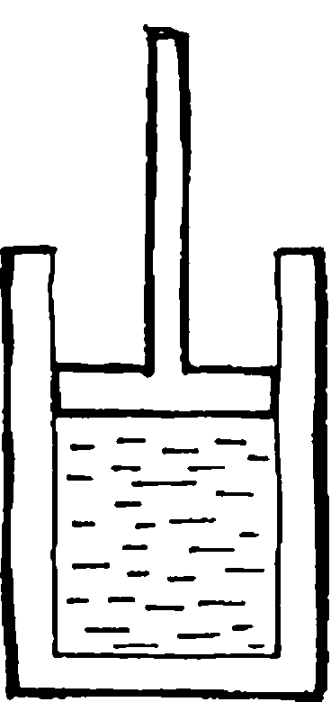

YILANIN KAFASINA YÖN VEREN SİSTEM
1- Nişangâh. 2-3- Yön belirleme kolları.
Calûd çılgına dönmüştü. Çünkü o zamana kadar seri ateş edebilen top görülmüş şey değildi. Kendisini icadına o kadar kaptırmıştı ki, omurganın mukavemet hesaplarında yaptığı hataları görebilmesi imkânsızdı. Diyarbekirli ikizler ona, top ateş ettiği anda omurganın kırılacağını, bu yüzden kalınlığının beşte üç arttırılması gerektiğini, fakat bu yapılırsa yılana binen ek ağırlık nedeniyle hızın dörtte üçünün azalacağını, bunun için de kazanın hacminin yirmisekizde beş arttırılmasının elzem olduğunu, gel gör ki bu durumda da yakıt tüketimi fazlalaşacağı için yılanın menzilinin iki buçuk fersaha ineceğini söylediklerinde yine umutsuzluğa kapılmadı ve onlara, sanki çok basit bir iş yapmalarını istiyormuş gibi, gereken hesapları derhal yapmalarını buyurdu. Samur ve Yağmur Çelebiler barakalarına kapanıp tam üç buçuk ay kafa patlattılar. Yılanla ilgili sayılar ve veriler o kadar fazlaydı ki, bu, içinden kolayca çıkılacak bir iş değildi. Çünkü bu mesele, koskoca bir imparatorluğun bütçe defterini denkleştirip kapatmaya benziyordu, lkinci ay, sayılardan başka bir şey düşünemez olduklarından konuşmayı unuttular. Üçüncü ay çoktan bittiğinde artık her şey, onlar için bir sayı olmuştu: Saymalarına gerek kalmadan bir avuç çakıl taşının kaç tane olduğunu görebiliyorlardı. Evet, onlar taşları değil onların sayısını görüyorlardı. Sonunda avludaki kum tanelerinin sayısını da gördüler. Tam üç buçuk ay dolunca, küçük kardeş olan Yağmur Çelebi, hafızasında, muhayyilesinde ve görüsünde bulunan her şeyin sayısını gören ikizini vurdu. Kardeşi cansız yere serildiğinde ise, tabancayı bu kez kendi ağzına sokup tetiği çekti.
Tarihler, artık yaşlı biri olan Calûd'un, dev yılanı tasarlamaya ömrünün yetmeyeceğini anladığını, ama ölümden korkmadığını, çünkü kendisinin bu zırhlı canavarın içinde yaşayacağına inandığını yazarlar. Sıvaslı Ali Nazik Efendi onun, çıldırıp intihar ederek kendisini yüz üstü bırakan Samur ve Yağmur Çelebiler'in cesetlerini avludaki kör kuyuya attıktan sonra iki başlı canavarın mukavemet hesaplarını sabırla yapmaya koyulduğunu, son karısı da onu terketti- ğinde bir zürriyetinin olmamasının acısının onu büyük bir umutsuzluğa sevkettiğini, çünkü kendisi öldükten sonra yılanı geliştirecek ve nihayet inşa edecek biri olmayacağından, dolayısıyla o öldükten sonra, ikinci benliği olan yılanın da unutulup gideceğinden korktuğunu rivayet etmiştir. Terlikçizade Ali Necef Bey ise, evde Davud'la başbaşa kalan Calûd'un bu korkuyla îstanbul Sanayi Mektebi'ne gidip, orada sevabına okutulan öksüz ve yetim öğrencilerden birini yanına çırak aldığını yazmıştır. Merkep Abidin Efendi'nin Ali Necef Bey'den naklettiğine göre Calûd, talebeler arasında en uysal, en sessiz ve en siliği olan Üzeyir adında bir delikanlıyı seçmişti. Çünkü zürriyeti olmayan bu adam, Üzeyir'i tıpkı o yılan gibi, benliğinin bir parçası kılmak isliyordu. Böylece onu hiyel ilminde kolayca yetiştirebilecek, kendisi öldükten sonra da Üzeyir, yılanı tamamlayıp, ustasının ikinci benliği olan bu canavarı yaşatacaktı.
Tarihçiler ve vakanuvisler onun bu çocuğa ve hâlâ altı yaşında olan Davud'a çektirdiklerini anlata anlata bitiremezler. Üzeyir bir yana, zavallı masum Davud'a sebepsiz olarak ve sadece zevk için eziyet eden bu hiyelkârın ölümünü, râviyân-ı ahbar ve nâkilan-ı âsâr şöyle hikâyet etmiştir: Calûd, on yıllardan bu yana madenleri eğip bükerek kuş heykelleri yapan Davud'un sükûneti, yüzünden eksilmeyen tebessümü, en gaddarca köteğe rağmen ağlamaması karşısında sonunda çileden çıkmış, onun metanetini kırmak için eline bir kızılcık sopası alıp zavallıyı dövmeye başlamıştı. Ancak Davud, Yâfes Çelebi'nin iktidar taşını ele geçirdiği odaya kaçıp kapıyı kilitlediğinde Calûd köpürmüş ve derhal kilidi kırarak eskisinden daha kuvvetle zavallının çıplak bacaklarına, kıçına ve yüzüne vurmaya başlamıştı. Öyle ki, Yâfes Çelebi'nin bir zamanlar onun madalyonuna hak ettirdiği sabır taşı sonunda çatlamış ve çocuk ağlamaya başlamıştı. Onun gözyaşlarını gören Calûd'un keyfi yerine gelmişti. Fakat odanın bir köşesine kaçan çocuğu yakalamak isterken, onun elinde bir taş gördü. Yıldızsız geceler kadar siyah ve duru billurlar kadar saydam olan bu taşı, Davud var gücüyle Filistînin kafasına fırlattı. Taş, Calûd'un iki kaşı arasına gömüldü ve Filistînin o dev gibi gövdesi yere yığılıverdi. Ağzından ve kulaklarından kan geliyordu. Patırtıya koşup gelen Üzeyir, Calûd'un başından sekip mangaldaki kızgın korların arasına düşen o taşı gördü. Davud hâlâ ağlıyordu. Ama göz yaşlan acısından değil, bir adam öldürdüğü içindi. Calûd, Üzeyir tarafından yatağına sürüklenirken, alnını dağıtan o taş zihninden çıkmıyordu. Efendisinin, "Devri daimin sırrını mektepte medresede değil, kafanda ara" sözünü hatırladı. Ölmeden önce, çırağı olan o saf çocuğa yılanı mutlaka tamamlayacağına dair yemin ettirdi. Bir kâğıt imzalayıp evini, barkını, yıllarca ezdiği Üzeyir'e işte böyle bıraktı. Ona, öldükten sonra, bütün iktidarını borçlu olduğu saçlarını kanunu kadim üzere kazımasını vasiyet etti. Nihayet son nefesini verdi. Hainler haini Kara Calûd'un müdde-i ömrü altmışbir, devri tahayyülü ise kırksekiz yıl olarak hesaplanmıştır. Mezarı Kasımpaşa kabristanındadır. Toprağının bilek güreşinde kudret verdiği söylenir.
DEVRİ DAİMİN SIRRINI ÇÖZEN ÜZEYİR BEYİN HAL TERCÜMESİ VE GÖRÜLEBİLEN MENKIBELERİN BAZILARINI BEYAN EDER
Râviyân-ı ahbar ve nâkilan-ı âsâr Üzeyir Bey'in kâh Gala- tavî, kâh îstanbul!, kâh Sinobî olduğunu beyan etmelerine rağmen, bu konuda rivayet muhtelif olduğundan, onun aslında Dünyevî olduğunu, Yusrizade Tokatçı Kevakib Efen- di'nin de zikrettiği gibi, hayatının son yıllarında ise semavî sayılabileceğini söylemek isabetli olur. Çünkü Kalyoncukul- luğu Tekkesi pîrlerinden Tiryakî Boncuk Dede Hazretleri onun ibnü'l arz olduğunu ilan eylemişlerdir. Mahlası Hayalî, ustası ise bir Filistîdir. Çeşm-i Siyah Badem Efendi ile Katır- baş îzzet Çavuş, onun soy ve sopunun belli olmadığını zikretmişlerse de, Seccadecibaşızade Zerduva Basri Çavuş onun soyunun Harirî'ye kadar uzandığını vakayinamesinde yazmıştır. Bütün bu râviler, nakiller ve nice nice diğerleri, onun menkıbelerini şöyle rivayet ve hikâyet etmişlerdir:
Tokatçı Kevakib Efendi'nin Havaî Efraim Bey'den naklettiğine göre o, bir öksüz ve yetim olarak sokaklarda sürtmüş, viranelerde barınmış, çöplüklerden nevale toplamıştı.
Ne var ki İstanbul Sanayi Mektebi açılınca bu hayatı da noktalanmıştı. Çünkü bilindiği gibi bu mektebin öğrencileri sokaklardaki başıboş çocuklar arasından seçilecekti. Nihayet, bir bekçiden kaçarken, adam ucu demirli sopasını onun ayaklarına fırlatarak çocuğu yere düşürmüş ve kulağından tuttuğu gibi Zeytinburnu'ndaki sanayi mektebine götürmüştü. İlk yıl burada yazı, hesap, hendese ve işe yarayacak kadar şakirdlik öğrendi. Zekâsı ve kavrama yeteneğinin, akranlarının kat be kat üstünde olduğu ortaya çıkınca, sille, tokat, tekme ve sopa yemekten pek az nasibini aldı. Fakat bu kez onu çekemeyen arkadaşlarının eziyetine maruz kaldı: O, sekizleri ezberlediğinde, hâlâ altılardan ileri gidemeyen arkadaşları -kerrat cetvelini dürüp yağlayarak makatına soktular. Fisagor'dan henüz habersiz olduğu halde, bir dik üçgenin hipotenüsünün, dik kenarların karesinin toplamına eşit olduğunu ispatladığında ise yer yerinden oynadı. Akranlarından bu yüzden o kadar eziyet gördü ki, ertesi günü muallime gidip, teoremi aslında kitaptan okuduğu palavrasını sıkmak zorunda kaldı. Ne daha eksik ne daha fazla, tam akranları kadar olmalıydı. Böylece ne bahasına olursa olsun susmayı öğrendi. Gel gör ki bu tavrıyla arkadaşlarını pek ikna edemiyordu. Aptal görünmenin bir yolunu bulmalıydı. Ne yazık ki bunu başarabilecek kadar zeki değildi. Kendisine yapılan eziyet arttıkça arttı. Neyse ki ikinci yıl, o tam onbir yaşma bastığı zaman, müdürün odasına çağrıldığında bir kurtuluş ümidi tecelli etti. Odada kendisiyle birlikte oniki çocuk vardı. Başında aziziye fes, üstünde bir redingotla, şık, yaşlıca fakat korkutucu bir adam müdürle konuşuyordu. Denildiğine göre bu bey bir hiyel ustasıydı ve çocuklardan birini, ona yapılan bütün masrafları ödeyip yanma çırak alacaktı. Müdüre paraları sayan adam, kendilerini beğendirmek için karınlarını içeri çekip göğüslerini geren çocukları es geçerek gözlerini ona dikti. Arkadaşlarından aylarca ve yıllarca eziyet çeken çocuk kurtulduğunu sanıyordu. Adamla birlikte Galata'ya geçip Yüksek Kaldırımcı tırmanırken bile, ne kadar büyük bir belaya çattığının farkında değildi. Mevlevihane'nin tam karşısındaki evin avlu kapısından girer girmez, adamdan okkalı bir tokat yedi. Üstelik bu, ona şahsiyetini unutturacak olan sillelerin ilkiydi. Çünkü Sanayi Mektebinde elini öpüp sadakat yemini ettiği efendisi onu, hepsi de ölü doğan yetmiş küsur çocuğunun hasretiyle değil, erkek bulur bulmaz evden kaçan karılarının hayatında bıraktığı boşluğu kapamak için yanma almıştı. Karıları ona, kendi benliğini gelecekte yaşatacak bir zürriyet vermediğinden, zekeri hekim tavsiyesiyle yıllar önce kesilen adam, bu masum çocuğu dölleyecekti: Onu hiyel ilminde yetiştirip bu konuda buluğa erdirdikten sonra, devasa yılanın tohumlarını onun masum zihnine fışkırtacak ve bir çeşit rahim olan bu zihni bilgiyle besleyecekti. Yılanın hesabı kitabı o kadar fazlaydı ki, zaten bir ayağı çukurda olan adamın, ilk sancıları, içinde geliştiği rahim olan zihinde hesapları tamamlanan canavarın doğumunu, doğu ya da batıdaki herhangi bir ülkeden ihtira beratı denen kafa kâğıdının alınmasını, bir fabrikada yüzlerce mühendis ve binlerce işçi tarafından büyütülmesini ve seri olarak çoğaltılmasını, böylece reşid olduğunda ise, savaş meydanlarına, düşman şehirlere, kırlara ve dağlara, kısacası yüzlerce kardeşiyle yeryüzüne salıverilmesini, yüzen, yürüyen ve uçan her şeyi yokederek, bir vakitler onu tasarlayan babasının varlığını ve benliğini yaşatıp gerçekleştirmesini görmeye ömrünün yetmeyeceği açıktı. Ne var ki onun dölü olan dev yılan, adamın amaçlarım ve iktidarını yaşatacağı için ölümden pek bir korkusu yoktu. Çocuğu bulduktan sonra diğer endişeleri de azalmıştı: Yılanın tohumunu zihninde taşıyacak bir çocuk için Arapçada "taşıyıcı" demek olan "hamma!", "hamil" ve "hamile" kelime lerinden hangisini kullanacağından emin değildi. Çocuk, kendisinden, bu yılana gebe kaldığında onu doğurmaktan vazgeçemezdi de. Bunun için gereken önlemleri almıştı: Her şeyden önce, onun vazgeçmek gibi büyük ve önemli bir kararı vermesini önlemek için çocuğun şahsiyetini yok edecekti. Taşları yerinden oynatan gür sesi, şapladığı yerden hâlâ ses getiren demir tokatları bu işin teminatıydı. Ayrıca onun, dünyadan, hayal ya da gerçek bütün yaratıklardan, kısacası her şeyden korkmasını, diğer insanlardan çok daha güçsüz olduğunu hissetmesi için de gerekeni yapmaya kararlıydı. Böylece kendisini düşmanlarla dolu bir ummanda gören çocuk, zihninde döl tutan o canavara, o dev yılana sarılacak, onu bir kurtarıcı olarak görecekti. Güçsüz, sakat ve şahsiyetsiz olduğuna bir kez inandığı için, bu iktidar kaynağından vazgeçemeyecek, onu büyütüp geliştirecek ve nihayet canavarı gerçekleştirecekti. Kısacası adam, her şeyi hesaplamıştı: Geri kalan azıcık ömründe gerçekleştiremeyeceği bu dev yılan kendi benliğinin bir parçasıydı, ama çocuk, bu canavarın varlığının bir parçası, onun adeta bir kozası olacaktı.
Havaî Efraim Bey'den bu kez Kuyruklu Abidin Çavuş'un naklettiğine göre bu hain adam, dev yılanın büyüyeceği zihni daha da bakir kılmak amacıyla, o sıralar onbir yaşında olan çocuğun yeni yeni gelişen şahsiyetini yoketmek ve uğursuz dölün tutması için onu buluğa erdirmek zorundaydı. Bu iş için sekiz yıllık bir plan bile yapmıştı: Planın en önemli parçası, çocuğun ne olursa olsun, kesinlikle sokağa çıkmamasıydı. Bu yüzden büyük Beyoğlu yangınında bile adam, ne onun, ne de madenleri eğip büken Davud'un evden ayrılmalarına izin vermedi. Yangın kazasız belasız atla- dıldıktan sonra asıl eziyet başladı. Çocuğa cebir ve hendese öğretirken, dışarıda amansız bir dünyanın olduğunu, sokaklarda ise adına insan denen kana susamış canavarların kol gezdiğini söylüyordu. Ertesi yıl sıra çok bilinmeyenli denklemlere, fonksiyonlara, polinomlara, kuvvetler ve bileşkelerine geldiğinde ona bu korkunç insanların resimlerini gösterdi: Buhtancıları, dedikoducuları, hafiyeleri, eli kanlıları, meymenetsizleri, amansızları, nemrutları, zorbaları ve hunharları uzun uzadıya anlattı. Ayrıca geceleri ona sık sık korku hikâyeleri anlatıyor, meyhanelerde şarap ısmarladığı külhanbeylerine ise, evinin önünden geçerken nara atıp tabanca patlatmalarını tavsiye ediyordu. Elbette bu sırada kendisi de boş durmuyordu. Daima bağıra bağıra konuşuyor, dayak yemenin değil de dayak yiyen birini seyretmenin daha sindirici olduğunu bildiğinden, çocuğun gözleri önünde o masum Davud'a kötek üstüne kötek atıyordu. Bununla kalsa iyiydi. Gece yarıları, sabaha karşı, cadıların, umacıların, mükerrûların korkunç inlemelerini taklit edip onun uykularını kaçırıyor, sonuçta onu pıstırdıkça piştiriyordu. Dördüncü yılın sonunda çocuk korkağın ve sünepenin teki olduğu için, artık avlu kapısını kilitlemesine gerek kalmamıştı. Beşinci yılda ona'analitik hendese, trigonometri, mukavemet ve dinamik dersleriyle birlikte evin dışındaki dünya konusunda sayısız öğüt de verdi: Kendisini can kulağıyla dinleyen pısırığa, mevkileri ve cinsleri ne olursa olsun insanların kötü ve çok tehlikeli olduğunu anlatıyordu. Buna göre insanlar bir bakıma, güçlü veya güçsüzdü! ama değişen bir şey yoktu. Çünkü güçlü insanlar düelloyla mertçe döğüşüp adam öldürürler, güçsüzler ise korkakça pusu kurup cinayet işlerlerdi. Kadın cinsinin daha nazik, daha şefkatli olduğu da palavraydı: Onlar adam öldürmekten değil, kandan çekinirlerdi. Bu yüzden kurbanlarının başına tabanca sıkıp ortalığı kan revan içinde bırak- maktansa, daha temiz bir yolu, mesela zehiri tercih ederlerdi. însanların akıllı ya da cahil olmaları da onları zalimlikten alıkoyamazdı. Zeki olanlar menfaaatlerini bildikleri için para uğruna cinayet işlerlerken, cahiller ise cahil oldukları, yani düşünsel bir macera yaşamaya güçleri yetmediğinden, zihinlerindeki boşluğu, ne olduğunu bile tam olarak bilmedikleri bir dava ile kapatırlardı. Böylece onlar, akıllılar gibi para uğruna değil, inandıkları dava için kan dökerlerdi. Peygamberin torunları bile din için katledilmemiş miydi? Çocuk şehzadelerin öldürülmesi için bizzat şeyhülislâm fetva vermemiş miydi? Bir Rus yazarı, Büyük Engizitör adlı eserinde, İsa Mesih'i yakmak isteyen bir kardinali anlatmamış mıydı? Adam bunları sanki bir sır veriyormuş gibi çocuğun kulağına fısıldıyor, ama aynı zamanda, eğer isterse onu evden kapı dışarı edivereceğini de ima edip gözdağı veriyordu. Nihayet altıncı yıl ona, sıvıların ve gazların mekaniğini, hareket kanunlarını, ısı makinelerini, kinematiği, dizileri, integrali ve lineer cebiri öğretirken artık onaltı yaşını bitiren bu pısırığın kendisinden kat kat zeki olduğunu, hatta sünepeliği olmasa ona dâhi denilebileceğini farketti. Bunu anlar anlamaz ikinci benliği olan dev yılanın geleceği konusundaki son endişeleri de yok oldu: Çocuğun dehası, canavarın tohumları için mükemmel bir rahim olacaktı. Yedinci yıl, belki de bu yüzden ona fazlasıyla yüklendi: Artık sakalları çıkmaya başlayan pısırık, gazlar kanununu, Jul deneyini, Karno ve Jul çevrimlerini, emniyet katsayılarını, çekilme, basılma ve burulma gerilimlerini adeta yutuyordu. Böylece adam zavallıya krank ve kamalı millerin; uç, konik ve küresel muyluların; kovanlı, çanaklı, bilezikli, genleşme- li ve mafsallı kavramaların; düz, kademeli ve gergili kasnakların; vidalı, çentikli ve maşalı pimlerin ve daha bir nice mihaniki akşamın ayrıntılarını ve hesaplarını öğretti. Gel gör ki adam, sanayinin hızla geliştiğinin farkındaydı. Patlamalı motorlar, elektrik üreten dinamolar, sesi çok uzaklara nakleden cihazlar ve elektrik ampullleri icad edilmiş, eski zaman mucidi bir hiyelkâr olan kendisi ise çok gerilerde kalmıştı. Bu nedenle, varlığını yaşatacak olan dev yılanın selameti için, onyedi yaşını bitiren pısırığın asr! bilimlere yaklaşması lazımdı: Ona ayyaş bir Fransızca hocası tuttu. Çok geçmeden de önüne cilt cilt Fransızca bilim ve hiyel kitapları yığdı. Sonunda pısırığın zihni buluğa ermişti. Adam, yılanın dölünü tutmaya artık hazır olan bu oğlanı gebe bırakacağı tarihi hesapladı ve günleri saydıktan sonra bir gece onu odasına çağırdı. Oğlana, kendisinin yakında öleceğini ve onu tehlikelerle dolu bir dünyada tek başına bırakmak istemediğini söyledi: Artık onun kendini güçsüz hissetmesine hiç gerek yoktu. Çünkü ona, sonsuz bir iktidar verecekti. Adam bunları söyledikten sonra, yıllar önce çizdiği dev yılanın planlarını oğlana gösterdi. Delikanlı planları uzun uzun inceledikten sonra, "Benim saygıdeğer efendim, piston buharla değil de basınçlı havayla itilse hem ağırlık onyedi ton azalır, hem de yılan böylece suda bile ilerleyebilir" dedi. Oğlanın sözlerini işitince, adam sekiz yıldan beri ilk kez derin bir soluk aldı. Rahim döl tutmuştu.
Yine Kuyruklu Abidin Çavuş'un naklettiğine göre bu pısırık delikanlı, Fransızca hiyel ve balistik kitaplarından namlu sarmal adımları, devir adedi, imla kesafeti, sutre açısı, nitrogliserin, cıva fulminat, pikrik asit ve trotilin patlama baskısı ve süratleri konusunda son bulguları okuduğu sırada, evin üst katında efendisinin dövdüğü Davud'un ağlamasını işitmişti. Bu alelade bir olay değildi. Çünkü Davud ne kadar kötek yerse yesin asla ağlamazdı. Derhal yukarı çıkıp bakmaya karar verdi. Odaya girdiğinde alnı içeri göçmüş, ağzından ve kulaklarından kan gelen ve yerde boylu boyunca yatan efendisini gördü. Adam, o sırada hâlâ yanmakta olan mangalın yanında yere yığılmıştı. Mangaldaki korlar arasında, yıldızsız geceler kadar siyah ve duru billurlar kadar saydam bir taş vardı. Korkak delikanlının yüreği ağzına gelmişti. Ağlaya sızlaya, efendisini yatağa taşıdı. Davud'u dışarı yollayarak hekim getirmesini söyledi. Bir zamanlar efendisinin zekerini kesen yaşlı hekim geldiğinde, bu hain adamın fazla yaşamasının imkânsız olduğunu öğrendi. Ertesi günü efendisi kusmaya başlayınca tehlikeler ve canavarlarla dolu bir dünyada artık tek başına kalacağını anlamıştı. Üçüncü gün zalim adam gözlerini açar gibi oldu ve öleceğini anlayıp günahlarından arınmak isteyen her insan gibi, ona güçlükle, Yâfes Çelebi adındaki ustasının kendisine saçlarını kazıtmasını vasiyet ettiğini, eğer bunu yapmazsa ahrette iki elinin yakasında olacağını söylediğini fısıldadı. Öldükten sonra saçları mutlaka kazınmalıydı. Eğer bunu yapacağına söz verirse malını mülkünü ona bırakacaktı. Delikanlı adama söz verdi. Efendisi de mahalle imamı ve iki şahit huzurunda vasiyetini açıkladı ve son nefesini verdi.

HAİN ADAMIN KAFASINDAKİ DÖVME: BİR KAPALI PİSTON
Aynacı Sabit Efendi'nin Havai Efraim Bey'den naklettiğine göre bir ustura ile efendisinin iktidarının yıllarca barındığı saçlarını kazıyan delikanlı o sıralar ondokuz yaşını yeni bitirmişti. Usturayla cesedin alnını ve şakaklarını temizledikten sonra sıra başın arkasına geldiğinde, yıllar ve on yıllar önce, adam devri daimin esrarını öğrenmek için evin bodrumunda kırk gün kırk gece kalıp eziyet çekmeyi kabul ettiği sıralarda, Yâfes Çelebi'nin iğne ve mürekkeple onun kafasına dövdüğü o dövmeyi görmüştü. Gel gör ki o, "sırrı mektepte medresede değil, kafanda ara" diyen Yâfes Çelebi'den ve bu dövmenin de iktidar taşıyla çalışacak olan devri daim makinasının planı olduğundan elbette habersizdi. Mahalle imamı ve oniki kabadayı gelip cenazeyi aldıktan sonra o hâlâ evden dışarı çıkmaya korkuyor, tek başına kaldığı bu dünyada tutunabilmek için yegâne dayanağı olan o yılan üzerinde düşünüyordu. Ancak efendisinin kafasında gördüğü o dövme de zihninden çıkacak gibi değildi. Çünkü bu, çok basit, içi su dolu, kapalı bir pistondu. Öyle ki, zihninde gitgide büyüyen o son derece karmaşık, girift ve içinden çıkılmaz dev yılan karşısında son derece yalındı. Evden dışarıya, tehlikelerle dolu dünyaya çıkmaya korktuğundan evin alışverişini Davud'a yaptırıyor, geceler boyunca da yılanı tasarlıyordu. Çünkü bu dev yılan, güçsüz, silik ve pısırık olan kendisini, dünyayı dolduran canavarlara karşı koruyabilecek yegâne silahtı. Böylece onu bir kafa, bir gövde ve kıvrak bir kuyruk olarak düşündü. Buhar basıncı gibi ilkel bir hareket kaynağını bıraktı, basınçlı havadan da vazgeçip canavarı elektrikle çalıştırmaya karar verdt: Yılanı yürüten pistonları üç tane olarak hesapladı. Ancak bunlar sıvı ya da gaz basıncıyla değil mıknatıslı yataklar yoluyla hareket edeceklerdi. Gerekli olan enerji ise bir Sırp bilgini olan Tesla'nın dediği gibi ya atmosferdeki bulutlardan sağlanacak, ya da çok uzaklardaki bir güç istasyonundan şerarelerle gönderilecekti. Ayrıca bu canavarı korkunç silahlarla donattı: îstenilen hedefe yıldırımlar gönderebilecek üreteçlerin, mermisi patladığında demiri eritecek ısının iki katını çıkaran topların, insan kulağını sağır edip akıl sahibi mahlukları çıldırtan hoparlörlerin planlarını çizdi. Geriye sadece yılanın mukavemet hesaplarının sağlanması kalıyordu. Fakat korkunç bir güç olan bu canavar başkalarının eline geçmemeliydi. Bu yüzden yılanı yapmak için on yıldır okuduğu bütün kitapları, tuttuğu sandıklar dolusu notu, çizdiği bütün planları avludaki maden eritme fırınında yaktı. Pimleri, cıvataları, somunları, milleri, yatakları, frenleri, dişlileri, bobinleri, vakam tüpleri, manyetoları, bataryaları, dinamoları, kondansatörleri ve silahlarıyla yılan; bütün bu akşamın hesapları ve katsayılarıyla artık, yalnızca ve yalnızca, onun kafasındaydı. Evet, o artık güçsüz biri değildi. Kafasında bir canavar vardı. Yılan artık onun bir parçasıydı. Fakat yılandan başka hiçbir şeyin olmadığı bu rahimde, pısırık delikanlının kendisi yoktu. Bu yüzden canavarın onun bir parçası olmadığını, tam tersine, kendisinin canavara ait bir parça olduğunu bilemezdi.
Yine Aynacı Sabit Bey'in naklettiğine göre, babası olduğunu ileri süren, uzun boylu, çekik gözlü bir adamın evin kapısını çalarak Davud'u geri istemesi, pısırık delikanlının dış dünyayla yegâne temas kaynağının da elden gitmesine, ve bu yüzden onun yılanı tamamlamasına neden olmuştu. Yanında bir bekçiyle gelen bu otuz yaşlarındaki adam, Davud'un babası olduğunu ileri sürüyor ve iddiasını kanıtlamak için çocuğun kafa kâğıdını gösteriyordu. Davud da babasını tanımış, sevinçten ağlayarak adamın bacaklarına sarılmıştı. Bu durum karşısında pısırığın yapacak hiçbir şeyi yoktu ve adamın çocuğu götürmesine ses çıkarmadı. Fakat Davud'u kucağına alan adam tam çekip gidecekken durdu ve delikanlıya,
"Siz hayalperest bir zata benziyorsunuz. Ayrıca çok temiz bir yüzünüz var. Bu yüzden beni ziyaret ederseniz evime şeref verirsiniz" deyip kartvizitini uzattı. Hiyelkâr delikanlı kartvizitteki şekle, kuyruğunu yutan yılana baktıktan sonra küçük puntolarla basılmış şu ibareleri okudu:
UZUN İHSAN EFENDİ
İmparatorluk Hiyel Nazırı
Serapçı Sokak-Bayezid
Laz Beşir Efendi'nin yine Havaî Efraim Bey'den naklettiğine göre bu pısırık hiyelkâr, Davud gittikten sonra, tam on küsur yıldır kapalı kaldığı evden tehlikelerle ve canavarlarla dolu sokağa çıkmaya cesaret edememişti. îşin kötüsü evdeki erzak da bitmiş, kala kala yarım somun ekmek kalmıştı. Bu somunu tam iki gün idare etti. Üçüncü gün açlığın belirtilerini hissetmeye başlayınca artık evden dışarı çıkmak zorunda kaldığını anladı. Nasıl olsa zihninde onu koruyacak bir canavar vardı. Ama dördüncü gün eski endişeleri nüksetti: Canavarın hesaplarında bir yanlışlık olması ihtimali zihnini altüst ediyordu. Beşinci gün başı dönmeye ve dizlerinin bağı çözülmeye başladığında, yılanı en son parçasına kadar kafasında canlandırmaya, evet, tahayyül etmeye ve işletmeye karar verdi. Ancak ışıktan gözleri kamaşıyordu. Belki bunun, belki de tek başına olduğu evi emniyetsiz hissetmesinin yolaçtığı bir kararla avludaki kör kuyuya inmeye karar verdi. Yılanı orada canlandıracaktı. Ancak hissettiği bütün bu karmaşık duyguların aslında bir doğum sancısı olduğunu bilemezdi. Zihnindeki yılanı doğurup canlandırmak için seçtiği o karanlık kuyuya, bir ipe tutunup inerken kalbi küt küt atıyordu. Yılan kadar uzun kuyunun dibine ayak basar basmaz, yukarıdan sızan ışığın iki iskeleti, Samur ve Yağmur Çelebiler'in kalıntılarını aydınlattığını gördü. Onların altında sayısız cenin iskeleti vardı. Bunların arasında yeniçeri katliamı sırasında boynu vurulan Yâfes Çelebi'nin kafatasını farketti. Kelle, kuyuya atıldığında bir bakracın içine düşmüştü. Ancak pısırık hiyelkâr bu bakraçtaki altınlarla ilgilenmeden zemine, kalıntıların üzerine yattı ve yılanı tahayyül etmeye başladı. Çelik pullarla kaplı gövdeyi, mekanik bir beynin bulunduğu zırhlı kafayı, savrulduğunda koca koca binaları yıkabilecek güçlü kuyruğu, en etkili top mermilerine bile direnebilecek demir pulları, altıbin tonluk ağırlığı taşıyacak omurgayı, mıknatıslı yatakları ve bu yataklarda elektrik gücüyle kayan pistonları, hedeflere yıldırımlar gönderen dinamoları, boşaldığında binlerce insanı kömür edebilen kondansatörleri, yağmur bulutlarından şimşekler emen antenleri, kalın zincirleri tonlarca kuvvetle saran kasnakları, zehirli gazları fışkırtan emniyet supaplarını, çelik topları çiğneyebilecek dev dişlerin bulunduğu çeneleri döndüren devasa dişlileri, onbinler- ce tonluk ağırlıkların geremeyeceği heyula gibi çelik yayları, frenleri, volanları, milleri, yatakları, kavramaları, palangaları, şaftları, salmastraları, vidaları/somunları ve rondelaları tahayyül etti. Kafasındaki rahimin karanlığında böylece beliren bu yılan cenininin doğumuna ramak kalmıştı. Son bir perçini tahayyül etmesi yetecekti. Ufacık perçini de zihninde canlandırdıktan sonra, zihnindeki karanlık, madeni bir velveleyle inledi. İçinde hiçbir mürettebat olmadan çalışabilecek, kendi kararlarını kendi verebilecek ve kendi hedeflerini seçip elektrik şualarını gönderebilecek olan yılan, harekete geçmiş; dönen kasnaklar, birbirlerini kavrayan dişliler, mıknatısı yataklarda dakikada ikibin devirle gidip gelen pistonlar, karanlıklardan çekilen kara elektrik şerareleri ve aynı anda uyum içinde çalışan yüzbinlerce çelik akşamdan, kulakları sağır eden bir gürültü yayılmaya başlamıştı. Kızıl kıvılcımlar saçan vakum tüplerinin bulunduğu mekanik beyni, silahlarına, pistonlarına ve tüm akşamına kablolarla sayısız emir gönderiyor, ve hem ısıya hem de ışığa duyarlı gözlerinden, metalleri algılayan gömleğinden, karanlıklarda gören boynuzlarından gelen sayısız bilgiyi yine bu kablolar aracılığıyla alıyordu. Elmastan yontulmuş gözleri, çelik teni, tunç boynuzları ve diğer görme, işitme, algılama cihazlarıyla, artık doğduğunu, varlığa geldiğini böylece anladı. Sonsuz ihtirasıyla çelik ağzını açıp karanlıkları kükürt dumanı, elektrik şuaları ve korkunç bir madeni ıslıkla doldurdu. Bu korkunç ıslığı işitir işitmez canavarı tasarlayan zavallı hiyelkâr kendisinin, aslında yılanın bir parçası olduğunu anladı. Canavar onun zihninde değil, asıl o, canavarın içindeydi. Çığlık atmaya bile mecali kalmayan bu zavallı hiyelkârın pişman ruhu cıva buharlarının aktığı borulardan geçti. Muazzam bombalar fırlatan namlularda dolaştı. Tabiatın tutsak kuvvetlerinin döndürdüğü çarklara erişti. Benzin buharlarının patladığı pistonlara girdi. Yüksek gerilim kablolarını azap içinde aşıp kızgın vakum tüplere doldu. Kara gazların aktığı boruları takip ederek sonunda, hiç tasarlamadığı kazan dairesine geldi: Oradaki ateşi, yalımlarda yanan zavallı ruhları gördü. Çaresizlik içinde, zihnindeki bu karanlıkta oturup onca debdebe ve şaşaa arasında ağlamaya başladı. Hıçkırıkları artınca içindeki sesi işitti ve o hayali gördü: Ses ona, bu canavarın aslında insanoğlunun kibrinin ta kendisi olduğunu ve kibirin de kendi kendisini tüketeceğini söylüyordu. Böylece o, tahayyül ve hiyel gücünün son kalıntılarını kullanıp, yılana dünyanın en güzel gıdasını sundu ve canavarın kuyruğunu onun çelik ağzına verdi. Kendine hayranlığın çelikten simgesi olan bu yılan kendi kuyruğunu iştahla yutmaya başladığında, çok geçmeden çatırdayan tunç payandaların, yuvalarından fırlayan millerin, devasa zincirlerin gerip büktüğü kasnakların, mıknatıslı yataklarda sıkışıp kalan pistonların gıcırtıları karanlığı bastı. Yılanın kendi iktidarı yine kendini tüketiyordu. Dişliler yuvalarından, somunlar vidalarından fırlıyor, kondansatörler ve elektrik tüpleri ardı ardına patlıyordu. Canavar, içindeki, kötüye kullanılıp çoğaltılmış bütün ilim ve irfanla, kuyruğunu yuta yuta küçüldü. Tabiatın tutsak kuvvetleri zincirlerinden böylece kurtulduktan sonra hiyelkâr, zihninde sadece bir nokta kaldığım gördü.
Yine Laz Bekir Efendi'nin naklettiğine göre, kuyudan yeryüzüne çıkan bu günahkârın zihninde, yıllarca okuduğu cebir, hendese, trigonometri, kinematik, mukavemet, dinamik, balistik ve diğer fen kitaplanndan, yaptığı sayısız hesaptan, çizdiği tomarlarca plandan, efendisinin dünya ve içindeki canavarlarla ilgili olarak onun kulağına sır verircesine fısıldadığı sözlerden, hatta kendi benliğinden, işte kala kala o nokta kalmıştı. Noktanın dışında hiçbir şey bilmiyordu. Adını bilmiyordu. Nerede olduğunu bilmiyordu. Hangi devirde yaşadığını, hangi uyrukta olduğunu, geçmişini, yaşadıklarını, hiçbir şeyi, evet, hiçbir şeyi bilmiyordu. Ne var ki zihnindeki nokta ona huzur veriyordu. Noktayı temaşa ederek evin kapısından girdi. Her yer darmadağındı. Sağda solda, madenleri hamur gibi yoğuran o çocuğun yaptığı, ibibik, guguk, puhu, serçe, karga, zümrüdüanka, güvercin, simurg, kumru heykellerini gördü. Bir zamanlar çalıştığı odaya çıktı. Efendisinin çekmecelerini karıştırırken Sanayi Mektebi'nden verilen bir belge buldu. Üzeyir adındaki bir talebenin tam iki yıl ders gördüğüne dair bir zabıttı bu. Belgedeki adı sevdi. Artık yirmibir yaşında olmasına rağmen bu çocuğun ismini almaya karar verdi. Gördüğü her şey onu şaşırtıyordu. Bodruma indiğinde gördüğü çengelli ip ile ona bağlı muşamba fener de onu afallattı. Fenerdeki mumu yakıp ipi, her nedense onu korkutan kuyuya sarkıttı ve orada gördüğü altın dolu bakracı yukarı çekti. İkiyüz altını bir keseye koydu. Aynaya baktığında yüzünü tanıyamadı. Çünkü o nokta hâlâ zihnindeydi. Elbisesini beğenmedi. Ama cebinde bulduğu kartviziti altınlarının yanına koydu. Yıllardan beri ilk kez, evden dışarı çıktı. Gördükleri onu korkutmuyordu. Mevlevihane'yi ve karakolu geride bırakıp Tünel Meydanı'na geldi. Havuzun kenarına oturup sağı solu seyretti. Diğer insanlar kadar şık olmayı arzuladı. Bu yüzden bir terziye gidip parasını peşin vererek redingot, pantolon, gömlek ve yelek ısmarladı. Birkaç papyon ve yaka seçti. Bir başka dükkânda kırmızı bir fes, daha ileride ise bir çift iskarpin satın aldı. Hristodulo Konstantino Kitabevi'nin vitrinine uzun uzun baktı ve Fransızca bildiğini farketti. Bir macera romanı alıp parasını ödedi. Evinden fazla uzaklaşmayı göze alamadığı için yuvasına döndü. Jül Vern'in romanını bir gecede bitirdi. Dört gün sonra terzi Vodonis'e gidip gömleğini, yeleğini ve pantolonunu giyip boyunbağını bağladı. Redingotunu sırtına geçirdi. Fesini düzeltti. Bu haliyle Vanberg'in fotoğraf stüdyosuna gidip resmini çektirdi. Burguy'dan gümüş topuzlu bir baston aldı. Löbon'da bir sandviç ve kahveyle karnını doyurdu. Kutulas Birahanesi'nde biraz vakit geçirdikten sonra, Dimitrakopulos Bakkaliyesinden akşam için tuzlanmış balık ve ekmek aldı. Haydrik'in ve Konstantinu'nun raflarını karıştırdıktan sonra üç macera, bir şiir ve bir de tarih kitabı seçti. Onu ilk kez görüp kim olduğunu merak edenlere pek de yerinde olarak adının Üzeyir olduğunu söylüyordu. Kendisi hakkında, o da çok fazla şey bilmiyordu. Belki de sadece bu yeter de artardı. îşte Üzeyir Bey böyle doğdu. Giyimi kuşamı ve görgüsüyle bir beyefendi olarak tanındı. Elinde gümüş topuzlu bastonu, parlak iskarpinleri, ütülü redingotu ve düzgün fesiyle onu görenler, "Üzeyir Bey'in ruhu da esvapları kadar temiz. Şu nurlu yüzüne baksanıza! Bekâr olmasına bekâr ama karımıza kızımıza dönüp de bakmış değil" diyorlardı.
Râviyân-ı ahbar ve nâkilan-ı âsâr, Yüksek Kaldırım'daki bütün eski zaman aşifteleri kocayıp göçünce, bütün kadim külhanilerin bıçaklanmış leşleri de viranelerden, meyhanelerden, sokaklardan ve kaçıp saklandıkları deliklerden temizlenince, Galata Mevlevihanesi'nin karşısındaki evin geçmişini ve içinde yaşamış olanların hayatını bilen, gören, işiten nesilden kimse kalmadığını rivayet etmiştir. Nitekim Tatar Mercan Efendi'nin Tütüncüzade Cuma Dede'den naklettiği bir rivayete göre Üzeyir Bey, elbette her şaşkınlık az çok geç tecelli ettiği için, bir süre sonra gerek kendisinin, gerek yaşadığı evin, gerekse evde izlerini bulduğu yaşamış ve ölmüş loşilerin hikâyelerini merak etmeye başlamıştı. Gelgelelim onun kafasını yine de en çok kurcalayan şey, zihnindeki noktaydı. Asla kaybolmayan bu nokta için tam üç göz doktoruna gitmişti. Hiçbir teşhis koyamayan dördüncüsünün muayenehanesinden çıktığında Strasburg Birahanesine uğradı. Fakat bütün yerler doluydu. Bu yüzden, neredeyse yüz yaşında görünen bir ihtiyarın masasına oturdu. Geveze ihtiyar onu sıkacak sorular sormaya başladığında kalkıp gitmeyi düşündü. Ama beriki onu bırakacak gibi değildi. Çaresiz ona cevap yetiştirmeye çalışırken aksakallı adam, onun Mevlevihane'nin karşısındaki iki katlı evde oturduğunu öğrenince sözünü kesti: ileri sürdüğüne göre kendisi, gençliğinde yetmişüçüncü ortanın kullarından bir yeniçeriydi. Vaka-yı Hayriye dedikleri katliam sırasında kaçmış, Galata'ya geçmiş ve işte, tam da onun şimdi oturduğu evin avlusuna girmişti. Evin sahibi olan yaşlı adam onu avludaki kör kuyuya saklamış, fakat peşindekiler evi basınca bu zavallı adamı katletmişlerdi: Adamcağızın kesik başının kuyuya atıldığını bizzat görmüştü. ihtiyar adamın bu sözlerini dinleyen Üzeyir Bey, anlatılanları bir bunama belirtisi olarak yorumladı. Zaten bu yüz yaşındaki adam, Yeni Dünya'nın Atlanta şehrinde imal edilen ve iptila yapan bir şerbet içiyordu. Koka yaprağı ve kola cevizinden yapılan bu iksirin onda böyle hezeyanlara yolaçması pek tabii idi.
Yine Hiyel Nezareti şakirdlerinden, Zerduva Kazım Paşa damadı Ali Sansar Efendi, hem kendisinin, hem de ikamet ettiği ev ile onda bir zamanlar yaşamış olan insanların hikâyelerini araştırmak amacıyla Üzeyir Bey'in, elindeki bir kartvizitteki adrese gitmeye karar verdiğini rivayet etmiştir. Bu rivayete göre o, en temiz ve en şık elbiselerini giyerek bir ramazan günü Tünel'den Karaköy'e inmiş, köprüden geçip Mısır Çarşısı'ndan dolanarak sonunda Serapçı Sokağı'ndaki o binaya, Hiyel Nezareti'ne ulaşmıştı. Anlaşılan, hem ikametgâh hem de resmi işler için kullanılan bu evde hiyel nazırı, eşini dostunu iftara davet etmişti. Sayısı hayli kalabalık olan misafirler evi doldurmakla kalmamış, avluya, hatla sokağa ile taşmışlardı. Sağa sola koşturan, elimucu, asçiskas, ebe kaç kaç oynayan çocuklar da bu kalabalığa katkıda bulunuyorlar, sonuçta bir keşmekeştir sürüp gidiyordu. Onu görür görmez çocuklardan birinin sevinçle bağırmasına şaşırdı, ama Davud'u tanımasına imkân yoktu. Çünkü zihnindeki o noktadan başka hiçbir şey bilmiyordu. Davud binbir sevinç nidasıyla ellerine sarılıp onu avluya sürüklemeye başladı. Avludaki misafirler de bağırtıları işitince susup ona dikkat kesilmişlerdi. Herhalde çocuğun sesi evden de duyulmuş olmalıydı ki, kapıdan uzun boylu bir adam çıktı. Bu, imparatorluğun hiyel nazırı Uzun îhsan Efendi'ydi. Üzeyir Bey'i görür görmez tanıdı ve gidip koluna girerek onu üst kata, şeref misafirleri için hazırlanan iftar masasına çıkarırken, şaşkın şaşkın bakan bu davetsiz misafire, "Evime şeref verdiniz. Bizleri kendinizden bu kadar uzun süre eksik ölmeyin. Bakın Davud sizi görünce ne kadar sevindi" diyor, onu tuhaf isimli adamlarla tanıştırıp, kulaklarına, "Bizdendir. Hayal ehli bir zattır" diye fısıldıyordu. îftara birkaç dakika kala misafirlerin gözleri, sinilerdeki, hepsi de birbirinden lezzetli görünen yemeklerde sabitleştiğinden ortalığı bir sessizlik kaplamıştı. Çok geçmeden bakışlar, pencereden görünen Süleymaniye Camii şerefelerine döndü. Az sonra müezzinler şerefelerde belirince ortalığı bir uğultu sardı, llele hele onlar, ellerini kulaklarına götürür götürmez uğultu iyice arttı. Sonunda ezan okunmaya başladığında kaşıklar besmeleyle tencerelere uzanıverdi. Leziz yemekler tencerelerden midelere indirildikten sonra, mahalle mescidinde teravi namazı kılındı. Nihayet yine eve gelindi. Neyzenler, kanuniler, kudümzenler ve tamburiler evde hazır bekliyorlardı. Böylece sultanîyegâh faslı başladı ve geceyarısına kadar sürdü.
Misafirlerin çoğu gitmiş geriye kala kala otuz kırk kişi kalmıştı. Gel gör ki Uzun îhsan Efendi onları bırakmak istemiyordu. Zaten mecliste bulunanların çoğu da gitmeye pek gönüllü değillerdi. Çünkü ta sahura kadar bir tahayyül müsabakası yapılacaktı. Bu müsabakanın kuralları ise son derece basitti: Bir sözlük rastgele açılıp gelişigüzel bir kelime seçilecek ve yarışmacı da bu kelimenin hikâyesini anlatacaktı.
Uzun îhsan Efendi o saate kadar uyumayan mızmız çocuklardan birini çağırıp, ona bir lügat verdi. Ne yapacağını gayet iyi bilen çocuk da, gözlerinden uyku aktığı halde, rastgele bir sayfa açıp parmağını bir kelimenin üzerine koydu: Hedef artık belliydi, yarışmacılar "kör" kelimesiyle ilgili birer hikâye anlatacaklardı. Kahveler içilip zihinler toparlandıktan sonra ilk olarak Zerduva Kazım Paşa damadı Ali Sansar Efendi birinci kör hikâyesini anlatmaya başladı:
-"Rivayet ederler ki, Taklamakan diyarında vaktiyle kör bir adam yaşıyordu. Bu zavallı adam âlemin güzelliklerini, harikalarını ve mucizelerini göremediği için o kadar çok üzülüyordu ki, sonunda gönlü de gözleri gibi karardı. Kederi arttıkça arttı ve akıttığı gözyaşları dillere destan oldu. Onun kara bahtı için şairlerin düzdüğü manzumeler, musikişinaslar tarafından bestelenip, hanendelerce okuna okuna nihayet memleket sınırlarını aştı. Çok uzak ülkelerden birinde yaşlı bir sihirbaz, pazar yerinde ağlayan sızlayan bir kalabalık görünce, merak duygusuyla aralarına karıştı ve kör adamın kaderini dile getiren türkülerden birini okuyan muganniyi o da dinledi. Gönlü o kadar kabardı, hisleri o kadar coştu ki, bir yolunu bulup zavallıya görme gücü kazandırmaya karar verdi. Sarayına giderek papağanına tez zamanda uçup körü bulmasını ve ona davet mesajını iletmesini söyleyerek kuşu saldı. Papağan uçup giderek, o sırada evinin bahçesinde ağlayan körün kafasına kondu ve ona sihirbazın davetini iletti. Görme umudu canlanan zavallı da, omuzunda kendisine yolu tarif eden papağan olduğu halde, demir asa demir çarık yollara düştü ve sonunda sihirbazın sarayına vardı. Sihirbaz ona bir camgöz verdi. Adam, efsunlu sözler söylenir söylenmez bu gözle görmeye başlayacaktı, öyle ki, ok yaydan böylece bir kez fırladığında, adamın tekrar kör olmasına imkân yoktu. Adam gözü aldı ve efsunlu söz sihirbazın ağzından çıkar çıkmaz gözün gördüğü her şeyi görmeye başladı. Fakat yol yorgunu olduğu için sevincini lam anlamıyla belli edecek durumda değildi. Bu yüzden sihirbaz onu sarayında kırk gün ağırlamaya karar verdi. Gelgeldim, sihirbazın karısını görür görmez adamın aklı başından gitti. Günler ve gecelerce kadını düşündü taşındı. Sonunda sarayın hamamına gidip kadının yıkanacağı kurnanın üzerine bir yere sihirli cam gözü koydu ve derhal odasına geri döndü. Kadın, o sırada içeride kendini seyreden sihirli bir göz olduğunu, dolayısıyla adamın o anda memelerini ve mahrem yerlerini görmekte olduğunu bilmeden hamama girip yıkanmaya başladı. Böylece adam kadını doya doya seyretti. Ne var ki sihirbaz bu işin farkına varmıştı. Bu yüzden adamdan gözü geri istedi ve onu kovdu. Fakat adam, ne kadar uzakta olursa olsun, o sırada sihirbazın sarayında olan gözün gördüğü her şeyi görmeye devam ediyordu. intikam almaya kararlı olan sihirbaz, tellallar bağırtıp dünyanın en çirkin, en gudubet acuzesini buldu ve bir ressama kadının resmini yaptırdı. Resmi bir odaya koyup gece gündüz aydınlık kalması için üstüne bir fener astı ve tam önüne de, o sihirli gözü koydu. Sonunda o nankör adam, ömrü boyunca bu gudubet, çirkin acuzeyi seyretmek zorunda kaldı ki, bu da kör olmaktan bin beter bir şeydi."
Misafirler Ali Sansar Efendi'yi alkışladıktan sonra, Ali Cümbüş Efendi ikinci kör hikâyesini anlatmaya başladı:
-"Rivayet ederler ki, vaktiyle Bağdat'ta bir hırsız yaşıyordu. Fakat mesleğinde o kadar beceriksizdi ki, çalıp çırpmak için gece yarısı girdiği evlerde, zifiri karanlık nedeniyle sehpalara, taburelere çarpıp deviriyor, uyuyan kedilerin ve maymunların kuyruklarına basıp bağırtıyor, yerde yatan insanlara takılıp tökezliyordu. Sonunda hem yakayı ele verip sopa yiyor, hem de ekmeğini kazanamadığından aç kalıyordu. Gecelerden bir gece sihirbazın birinin sarayına gizlice girdi. Ancak saraydaki cinlerden birinin kuyruğuna basınca sihirbaz uyandı ve bu beceriksiz hırsızın haline kahkahalarla güldü. Hırsız aman dileyince ona acıdı ve bir dilek dilemesini istedi: Böylece o, sihirbaza, kendisine karanlıkta görme gücü vermesini, çünkü kedilerin kuyruklarına basıp baldırlarını tırmalatmaktan usandığını söyledi. Bu dileği bir şartla kabul edildi. Hırsız karanlıkta görecek ama ışıkta göremeyecekti. Yani insanlar için karanlık neyse hırsız için de ışık o olacaktı. Adam bu şartı kabul eder etmez karanlıkta tıpkı bir baykuş gibi görmeye başladı. O gece hiçbir yere takılıp sendelemeden tam beş evi soydu ve ağzına kadar altın gümüşle dolu çuvalı evine taşırken güneş yükseliverdi: Zavallı hırsız, gün doğar doğmaz bir kör olmuştu. El yordamıyla evine gitti. Verdiği karara bin pişman olarak, gece olunca sihirbazın sarayına tekrar vardı ve ondan içine düştüğü zor durumdan kendisini kurtarmasını rica etti. Haline acıdığı için sihirbaz ona büyülü bir fener verdi. Fener ışık yerine karanlık saçarak onun gündüzleri de görmesini sağlayacaktı. Ama bu kez, onun saçtığı karanlık nedeniyle çevrede bulunan diğer insanlar hiçbir şey göremeyeceklerdi. Aldığı bu hediyeye sevinen hırsız, gündüzleri meyhaneye bu fenerle gidip gelmeye başladı. Gelgelelim, onun yaydığı karanlık nedeniyle yarenleri hırsızı görüp tanıyamadılar. Bütün bunlardan sonra o, karanlıkta kendisi görürken arkadaşlarının onu göremeyeceğini, aydınlıkta da arkadaşları onu görürken kendisinin onları göremeyeceğini anlayıverdi. Sonunda para pul hırsı nedeniyle yapayalnız kaldığını kavradı. Böylece altın ve gümüşler içinde, ama tek başına, mutsuz bir hayat sürdü."
Misafirler Ali Cümbüş Efendi'yi daha az alkışladılar, çünkü anlattıklarını birinci hikâye kadar beğenmemişlerdi. Nihayet son yarışmacı olan Uzun Ihsan Efendi üçüncü kör hikâyesini anlatmaya başladı:
-"Rivayet ederler ki, vaktiyle Maveraünnehir'de kör bir adam yaşıyordu. Dünyanın güzelliklerini göremediğini sanan her kör gibi meyus ve dertliydi. Sonunda ağlaya sızlaya bir sihirbaza gidip üzüntüsünü ona anlattı. Gelgelelim siharbaz ona çok tuhaf bir cevap verdi: O aslında kör değildi. Çünkü o, gerçekte, dünyada bulunan sadece bir tek şeyi, son derece değerli bir şeyi görmekle ödüllendirilmişti. Gördüklerini sanan diğer insanlar da, aslında bu değerli şeyi görmemekle cezalandırılmışlardı. Sihirbazın söylediklerinin tesiriyle dünyayı dolaşmaya azmeden kör adam, görebileceği bu yegâne şeyi aramaya koyuldu. Dağ tepe, tarla bayır dolaştı. Vadileri, denizleri ırmakları aştı. Nihayet günün birinde hayatında ilk kez gökyüzüne bakmayı akıl etli. Çünkü aradığı şey aslında onun tam tepesindeydi. Önce bir yıldız gördüğünü sandı. Oysa bu sadece bir noktaydı. Böylece, aslında kör olmadığını ve her şeyi gördüğünü anladı. Çünkü gördüğü noktanın olmaması, bütün gözlerin {jjf) kör (jjT) olması demekti."
Hikâye bittikten sonra Tamburlu kıraathane eşrafından Divane Salim Efendi ile Tiryaki Fülfül Çelebi, "göz" ve "kör" kelimeleriyle yapılan tashifin son derece harcıâlem olduğunu, ta Fuzulî'den bu yana işlendiğini söyleyip,
Gâh bir harf sükutıyla kılır nâdir~i nâr
Gâh birnokta kusurıyla gözikör eyler
beytini okudular. Sünnetçi îmdat Efendi ile Karagüllezade îlham Çelebi de bu fikre katılıp, Lamiî Çelebi'nin,
Nimet-i rüyeti körler ne bilür
An ı göz ehli bilür kör ne bilür
beytini örnek verdiler. Uzun îhsan Efendi bütün itirazları kabul ediyordu. Bu yüzden müsabakada kendi oyunu Ali Sansar Efendiye verdi. Sonuçta, "sihirbazın karısını gözetleyen kör" hikâyesi müsabakayı kazandı. îkinci kör hikâyesini anlatan Ali Cümbüş Efendi haksızlığa uğradığını söylerken ramazan davulcuları geceyi gümbürdete gümbürdete mahalleyi bastılar. Sahur yemeği yendi ve nihayet imsak vakti gelince Üzeyir Bey, Uzun îhsan Efendiye veda etmeden evvel, kendi evinde vaktiyle iki hiyelkârın yaşadığını, onların döndürdüğü işleri merak ettiği için Hiyel Nezareti Arşivini inceleyip inceleyemeyeceğini sordu. Beriki ise, misafirlerini yolcu ederken gülümseyip ona, arşivdeki bilgilerin hiçbir işe yaramayacağını, ama eğer isterse kendisine, içinde her şeyin yazılı olduğu esrarengiz bir kitap verebileceğini söyledi. Gayrı ciddi görünen bu tuhaf teklife şaşıran Üzeyir Bey'in eline çarçabuk bir defter tutuşturdu.
Bu zamana kadar binbir masaldan çok daha fazlasını anlatan râviyân-ı ahbar ve nâkilan-ı âsâr, Üzeyir Bey'in bu bomboş defteri günlerce, haftalarca, aylarca karıştırdığını rivayet etmiştir. Fakat Ali Sansar Efendi, defterin boş olmadığını, tam tersine, içinde ilim bulunduğunu ve bu ilimin de bir tek noktadan ibaret olduğunu söylemiştir. Ali Cümbüş Efendiye göre ise, Üzeyir Bey, aylarca bu defteri karıştırdıktan sonra hiçbir şey göremeyince, doğruca Uzun Ihsan Efendiye gitmişti. Hiyel Nazırı ise, "Nasıl da unuttum!" dercesine elini alnına vurmuş, binbir özür dileyerek tüy kalemini hokkaya daldırıp defterdeki rastgele bir sayfaya özenle bir nokta koymuştu. Ne olursa olsun, hemen hemen bütün râviler Üzeyir Bey'in bu nokta üzerinde yıllarca düşündüğünü ve bunun da semeresini fazlasıyla gördüğünü söylemişlerdir. Çünkü o, Emir Buharî Şeyhi Seyyid Efendi- zade Kumru Çelebi'nin naklettiğine göre, bu sayede iki farklı tahayyül şeklini ayırt etmişti: Arapçada "noktasız" ha ile yazılan tahayyül (Jr~) becerikli olmak, maharet göstermek, hiyle yapmak, hiyel ilmiyle uğraşmak, hiylekâr ve hi- yelkâr olmak gibi anlamlara geliyordu. "Noktalı" hı ile yazılan tahayyül ise hayal etmek, imgelemek anlamına geliyordu. Sonuçta, hiyelkâr da hayalkâr da tahayyül ediyordu. Gelgelelim, adına ilim denen, yokluğu gözleri kör eden, belki de karacahillerin görmek maksadiyle büyüttükleri o nokta, onlardan sadece birinin tahayyülünde vardı. Hiyelkâr sayısız hiylelerle tabiatın kuvvetlerini tuzağa düşürüp esir etmenin yolunu ararken, hayalkâr, bütün dünyayı gözündeki o noktayla görüyor, Kâinatın kendisinin gerçekleşmiş bir hayal olduğuna, bu hayali örnek alıp yeni yeni hayaller yaratmak gerektiğine, çünkü onu mutlu eden şeyin sanayi ya da teknoloji değil, hulkiyyat ya da kreatoloji olduğuna inanıyordu.
Râviyân-ı ahbar ilk sinematograf gösterisinin Galatasaray'daki Spoek Birahanesinde yapıldığı yıllarda onun, zihnindeki noktada neler olduğunu araştırmaya başladığını rivayet etmiştir. Çeşm-i Badem Ceylan Hatun'un naklettiğine göre o, bir hiyel ehli olarak değil, bir hayalkâr olarak bu işe kalkışmıştı. Çabasının semeresini daha çabuk toplamak için Vik, Köhler Biraderler, Lorenz ve Keil'in raflarından sayısız roman ve hikâye kitabı almış, hayalkârların nasıl tahayyül ettiğini öğrenmeye çalışmıştı. Binbir Gece Masalları'nı adeta yuttu ama realist ve naturalistlerden hiç mi hiç hoşlanmadı. Onları, Sultan Abdülhamid Efendimize yaranmak için onun giyim, kuşam ve davranışlarını kopya eden paşalara benzetiyordu. Oysa Abdülhamid'i kopya değil de taklit eden bir meddah, elbette ki daha sevimli ve belki de gerçeğe daha yakındı. îşte realistler de Gerçeği ve Dünya'yı kopya ediyorlar; ama masalcılar, aslında gerçekleşmiş bir hayal olan Dünya'yı örnek alıp, onu ve üslubunu taklit ederek yeni hayaller yaratıyorlardı. Kopyalar ne kadar kuru ve tatsızsa, taklitler o kadar canlı ve sevimliydi. Sonuç olarak realist romanlar, yazarlarının suratları kadar tekdüze, şaşırtıcılıktan yoksun ve aslında gerçekdışı şeylerin anlatıldığı kitaplardı. Çünkü bir mucize olan gerçeğin kendisi şaşırtıcı ve hayranlık uyandırıcı iken, aynı gerçeği anlatan bir realistin romanındaki hemen her şeyin bu kadar tekdüze, bu kadar aşina ve bu kadar alışılmış olması başka nasıl açıklanabilirdi? Dünyadaki her şey bir mucizeyken insan nasıl hayret etmeden durabilirdi? îşte Üzeyir Bey bu düşüncelerle insanların gerçeklik duygusuna değil de, gerçeğin kendisine ve on- daki üsluba sadık kalmaya karar verdi. Gerek kendisinin, gerekse içinde yaşadığı evin geçmişi konusundaki gerçeği, eğer bulamazsa, tahayyül etmesi gerektiğini düşündü.
Kadıkaryeli Rıza Paşa afyoncubaşısı İmdat Efendi'ye göre, ikinci Meşrutiyet ilan edildiği ve Manş Denizi'nin uçakla geçildiği yıl, Üzeyir Bey'in evine gelen bir mahkeme emri onun hayatını az da olsa sarsmıştı. Çünkü evinde vaktiyle ikamet eden Yâfes Çelebi adında biri, tam yüzonbir yıl önce, evini ipotek ederek tefecinin birinden borç almıştı. Bu durumda Üzeyir Bey, asırlık faiziyle miktarı yüzbinleri aşan parayı ya ödeyecek, ya da üç ay içinde evini boşaltarak, borç parayı veren tefecinin torununun torununa teslim edecekti. Oysa Üzeyir Bey'in bu kadar parayı ödeyebilmesi bir yana, yıllar önce kuyuda bir bakraç içinde bulduğu iki yüz altından da elinde kala kala onbeşi kalmıştı. Çok az zamanı kaldığı için, kendisi ve yaşadığı evle ilgili gerçeği, zihninde hâlâ kaybolmayan o noktayla tahayyül etti. Üç ayın dolmasına bir gün kala, son gece, onu bir sürpriz bekliyordu. Bu gece evdeki odaları son bir kez daha dolaşmak istedi. Odalar, sofa ve avlu, vaktiyle masum bir çocuk tarafından madenden yapıldığı halde o gece canlanıveren, kanat çırpıp öten, bağıran, oradan oraya uçan, türkü söyleyen, ibibikler, kumrular, güvercinler, bülbüller, kanaryalar, puhular ve yalıçapkınlarıyla doluydu. İkinci kattaki odanın kapısı yıllardır kilitli olduğundan kırmak zorunda kaldı. Bu odada geçen hiçbir olayı hatırlamıyordu. Zeminde kan lekeleri vardı. Yer yatağında ise, pehlivan yapılı bir adamın vücut izi hâlâ duruyordu. Yastıktaki izlere bakılırsa, adamın ağzından ve kulaklarından kan gelmiş olmalıydı. Yatağın yanında artık çoktan kurumuş bir sabun, paslı bir ustura ile Samson'un iktidarını barındıran uzun, kıvırcık saçları gördü. Az ileride, üzerinde bir zamanlar yanan korların çoktan fosilleştiği mangalı farketti. Odadan çıkmak üzereyken gözü mangala yine takıldı ve hayretten donakaldı. Yıldızsız geceler kadar siyah ve duru billurlar kadar saydam bir taş, mangalın üzerinde birdenbire belirmişti. Şaşkınlığını yenerek ilerledi ve kızgın taşı eline alır almaz can acısıyla yere düşürdü. O an mangal yanıyor olsa, taşın korlar arasında kızgınlaştığına hükmedebilirdi. Aşağıdan bir kova su getirip, iktidar taşının üzerine döker dökmez buhar çıktı. Bununla yetinmeyip üfleye üfleye soğuttu. Nihayet eline alıp üzerindeki şu yazıyı okuyabildi:
EPSATO TOUTOUPETROU
Daha birçok yazıdan biri de şuydu:
CAHİL YÂFES BU TAŞA DOKUNDU
Taş elinde olduğu halde uzun süre bekledi. Vakit gece yarısını çoktan geçmişti. O, bu mucizeyi görüyor ve o güne dek gördüğü diğer mucizelere, yani Dünya ve onun ayetlerine şaşırdığından daha fazla şaşırmıyordu. Bir an, kendi adını da bu taşın üzerine yazmayı düşündü. Ama adının kendisine ait olup olmadığından emin olmadığı için bundan vazgeçti. Nihayet sabahı müjdeleyen ilk horoz öttü ve taş, tıpkı üflenerek sönen bir mumun alevi gibi, ellerinin arasında kayboldu. Üzeyir Bey devri daimin esrarını çözmüştü. Mesele, adeta bir nokta kadar basitti.
Daha sonraları râviler bu taşla ilgili muhtelif kıssalar beyan etmişlerdir. Mesela Divane Salim Efendi, beyhude yere iktidar taşı diye adlandırılan bu taşta hiçbir sihirli gücün olmadığım, hayret edilecek bir şey varsa, onun da bu alelade ametist taşının belli zamanlarda varlığa gelip kısa bir süre sonra da yokoluvermesi olduğunu söylemiştir.
VARLIGA GELİP YOKOLAN BİR TAŞLA ÇALIŞABİLECEK İKİ ZAMANLI DEVRİ DAİM MAKİNASI
Topuz Cuma Paşazade mübeyyiz Numan Bey, taşın her kırkiki yılda bir kez varlığa geldiğini, bu haliyle tam dört saat oniki dakika kaldıktan sonra derhal yokoluverdiğini ve yine kır- kiki yıl boyunca bu durumun sürdüğünü yazmıştır. Müsev- vid Şaban Efendi ise, sözkonusu süreyi otuzyedi yıl olarak düzeltmiş, ve bu taşın simgelediği Dünya iktidarının, hiçbir ölümlünün elinde uzun süre kalmayacağını ileri sürmüştür. Kadıkaryeli Rıza Paşa afyoncubaşısı imdat Efendi ise, bu taşta hiçbir iktidar kaynağı olmamasına rağmen, Üzeyir Bey'in, bu taşla sonsuza kadar çalışabilecek bir devri daim makinası tasarladığını, ama bunun üzerinde fazla durmaya gerek görmediğini rivayet etmiştir. Gerçekten de, Ali Cümbüş Efendi'nin imdat Efendi'den naklettiğine göre, bu devri daim makinası, içi suyla dolu, çok basit bir kapalı pistondu. Belli sürelerle varlığa gelen ve yokolan taş da pistonun içine konuyordu. Bu haliyle o, iki zamanlı bir motor olmaktaydı. Taş, kapalı pistonun içinde varlığa geldiğinde basınç artıyor ve piston yukarıya itiliyordu. Taş yokolduğunda basınç düştüğü için aşağıya iniyor ve tekrar varlığa geldiğinde piston yine yukarı çıkıyordu. Taşın varlığa gelip yokolması sonsuz bir zaman içinde sonsuz kere tekrar edeceğinden, bu basit makinenin hareketi de sonsuza kadar sürecekti. Ancak pistonun, varolup yokolan taşa bağlı olan iki zamanlı hareketi, bir mil ile dönme hareketine çevrilirse, ve bu mile de bir kasnak bağlanırsa, sadece bu devri daim maki- nasıyla, kasnağa sarılı ipe bağlı olan bir kovanın beş kulaçtık bir kuyudan su çekmesi asırlar, hatta bin yılllar alırdı. Eğer taş, kırkiki yılda bir kez değil de, sözgelimi dakikada bir kez varlığa gelip yokolsaydı, bu makinayla bir saati sonsuza kadar kurmadan çalıştırmak mümkün olabilirdi. Hele hele, dakikada bir değil de, saniyede iki kez varlığa gelseydi, kırk tonluk bir gemiyi sonsuza kadar yüzdürmesi işten bile değildi.
Üzeyir Bey'in, o gecenin sabahı evden ayrıldıktan sonra nereye gittiğini, neler yaptığını, nasıl yaşadığını ve ne zaman vefat ettiğini râviyân-ı ahbar bilmiyor. Ne var ki Hayal Nazırı Uzun îhsan Efendi, onun yanından asla ayırmadığı, üzerinde sadece bir nokta bulunan deftere, kendisinin, evin, ve orada vaktiyle yaşayıp ölmüş insanların muhayyel hayatlarını yazdığını, insanoğullarının hayatları da hayalden çok hiylelerle dolu olduğu için eserine Kitab-ül Hiyel adını verdiğini rivayet etmiştir. Müdde-i ömrü meçhuldür. Nereye defnedildiğine gelince; eğer her şey gibi kendisini de tahayyül ettiyse, muhayyilenin derinliklerinde bir define olarak belki de hâlâ mevcuttur.
SON
Karşıyaka